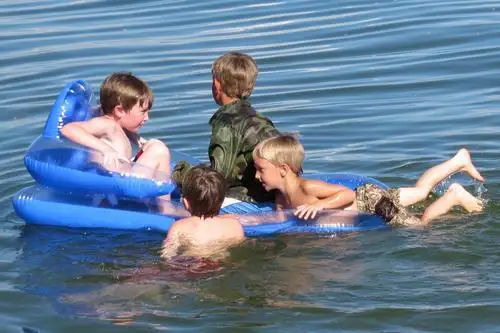

{kind=link}

Four Cousins in the Lake (ages 4, 5, 6 and 7) by Bev SalonenThis whole summer, I’ve watched the differences between our youngest sons, ages 5 and 7, grow more and more distinct.
I’ll name one “Mr. Think,” the other, “Mr. Do.”
It’s hard being so close in age and the same gender. I remember it well as the younger sister of two (my sister just 17 months older than I). There are so many inevitable comparisons, either along the lines of, “You are SO much alike,” or “You are SO different.” (So, which is it? Life can be SO confusing!)
And the last thing I want to do is perpetuate the unfair comparison phenomenon that seems to accompany same-gender siblings who follow one another through life, one the shadow of the other and, at times, vice versa. It can be a painful experience from the child’s point of view. But from the parent’s perspective, it can be very revealing about life in general.
Mr. Think is, as one might assume, a heady fellow who likes to ponder each move he makes. He is thoughtful in a wonderful way, and one of the most kind-hearted of our children, possessing a soft soul that I adore. He moves through life with common-sense hesitation, thinking through each move before he makes it. Life is a series of cerebral calculations, enjoyed best when everything is safe and in alignment.
Mr. Do is, naturally, much less inclined to think things through, but always ready to do. Life is his oyster and he’s going to go for it, whether in the form of breaking out the dance moves at the public pool, or stopping mid-sentence in a restaurant to sing a tune with the facial contortions of a famous entertainer spread across his face.
An unfortunate fact, at least as far as Mr. Think is concerned, is that Mr. Think is older than Mr. Do. This summer that has translated into Mr. Do taking off on his bike without training wheels before the summer had begun, and Mr. Think, two years his senior, being left in the dust. It’s meant Mr. Do didn’t hesitate a moment before jumping off the diving board during swimming lessons, whereas Mr. Think took a whole summer of weighing the pros and cons before giving it a whirl.
Mr. Think has had a frustrating time of it lately. Being a Thinker isn’t easy. In comparison, being a Doer seems a breeze. The injustices have been palpable.
I’ve tried to help Mr. Think think through his frustrations (the method that works best for him), explaining that there’s a place in the world for the Thinkers and the Doers of the world – that we need both and to have a little of both within us if possible. I want him to appreciate the important attributes he brings to our family and the world, and to know how beautiful it is to me that he’s contemplative in his approach to life.
I worry plenty about Mr. Do, too, due to the lack of thought involved in his method. It can keep a mother on edge, depending on the situation. This summer he came dangerously close to not seeing an oncoming vehicle while crossing a side street from one sidewalk to another while riding bike to the park with his father. When he was a toddler, I could never let my guard down around him at the pool because fear seemed nonexistent. And yet I marvel at his bravery and will.
But in the end, it takes a combination of both qualities to succeed in the world. Sometimes we need to think things through carefully. Other times, we just have to do. I’m still learning the right balance.
For now, I sit back and admire how differently God and their life experiences, including birth order and family dynamics, have made them. I cherish them both and delight that they have unique ways of moving about the world.
My goal is to continue encouraging their unique qualities while helping them open their hearts and minds to the positive attributes of the other; qualities that they both can and should nurture on the road to becoming whole.
Q4U: Describe some differences in your children or special people in your life that both challenge and delight you.